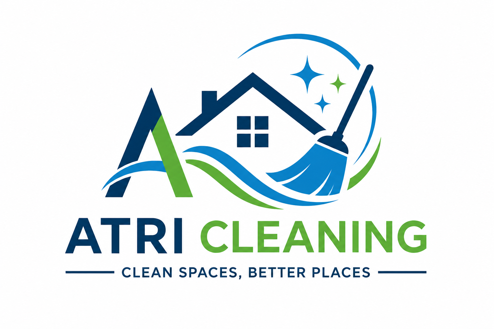
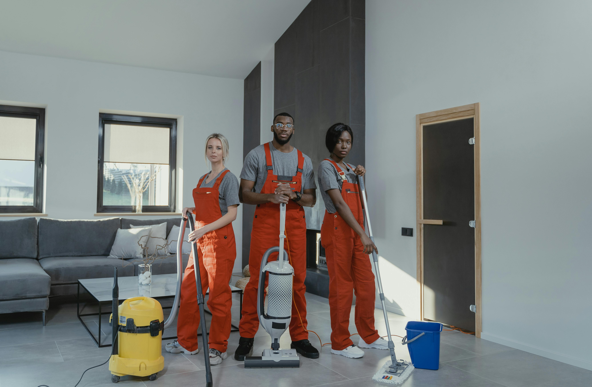
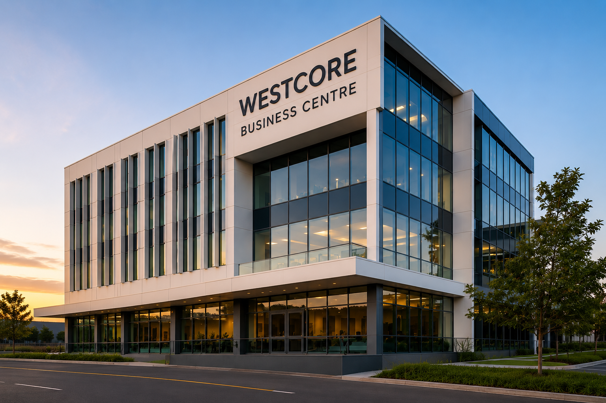
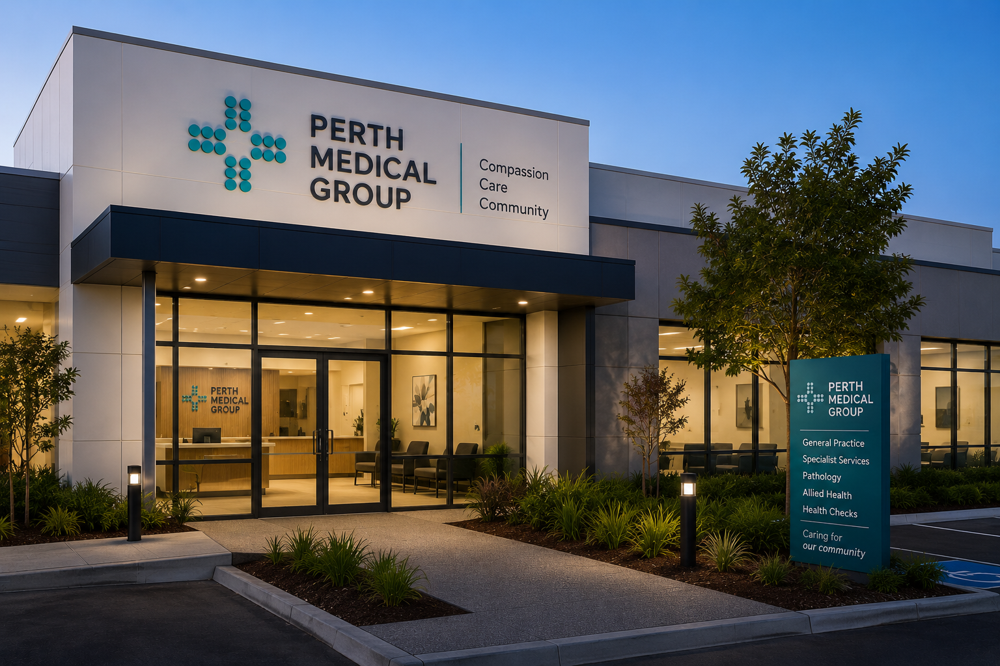
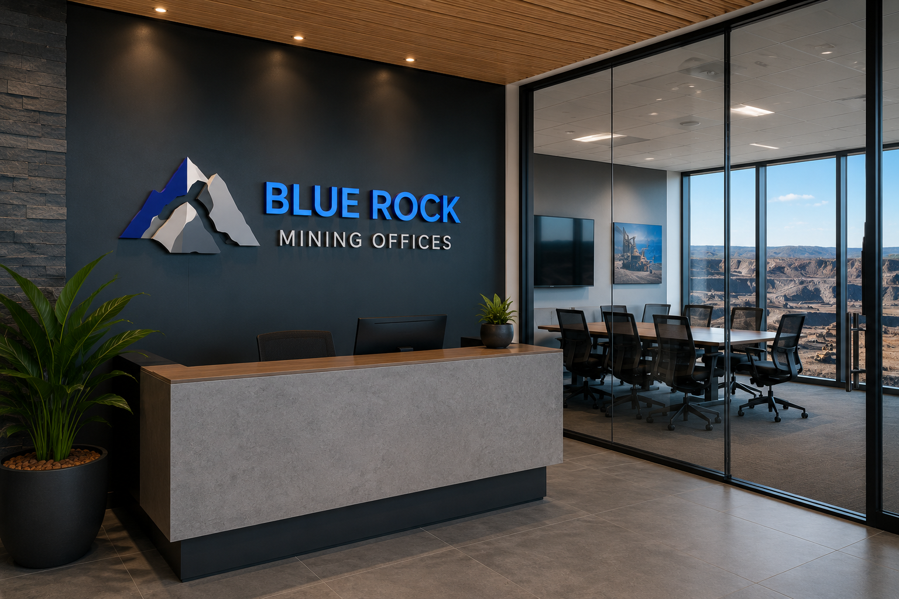

AtriCleaning provides reliable cleaning services for homes, offices and commercial spaces. We focus on flexible bookings, quality service and simple quote requests for customers.
Request a Quote
AtriCleaning is a local cleaning service company with over 20 years of experience in the cleaning industry. We provide domestic house cleaning, office cleaning, carpet cleaning, window cleaning, end-of-lease cleaning and general cleaning support for homes, offices and commercial properties across Perth.
We understand that a clean environment is important for your home, office and business. Our team works with attention to detail, honesty and care in every job we complete.
Customer satisfaction is our priority, and we aim to build long-term relationships through consistent results, friendly service and affordable pricing.
We provide dependable cleaning support for homes, offices and commercial properties.
Customers can request cleaning based on their preferred date and cleaning needs.
Our online quote form helps customers quickly explain what cleaning service they need.
Customers complete the quote form with property details and selected service.
Our team reviews the request, cleaning type, location and preferred date.
Our cleaners arrive and complete the requested cleaning service professionally.
AtriCleaning supports cleaning work for offices, commercial buildings, medical spaces and residential customers across Perth.

Commercial office cleaning including floor care, glass cleaning, desk sanitising and common area maintenance.

Reception area cleaning, window cleaning and high-touch surface cleaning for a professional medical office.

Office and carpet cleaning for a mining administration workplace, including meeting rooms and staff areas.
Yes. Cleaning products and equipment will be included in the quote depending on the selected service.
Yes. We provide cleaning services for houses, apartments, offices and commercial spaces.
The quote depends on the cleaning type, property size, condition and estimated time required.
1300 1018
info@atricleaning.com.au
26 St George Terrace, Perth 6109, Western Australia
Monday - Saturday
7:00 AM - 7:00 PM